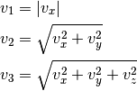

The array model¶
TBD


The NumPy array ndarray is defined by 4 attributes:
dtype: The common type of the array’s data. It can be a basic type. TBD quaternions
Warning
The name float128 is misleading. This data type is unlikely to represent quadruple precision (but C type long double instead). Try:
>>> [np.finfo(_).eps for _ in (np.float16, np.float32, np.float64, np.float128)] >>> [0.00097656, 1.1920929e-07, 2.2204460492503131e-16, 1.084202172485504434e-19]shape: A tuple containing the array dimensions (the length of the array axes, in NumPy terminology).
Note
- a dimension of zero is valid
- the shape () is valid, it corresponds to a 0-ranked array, similar to a scalar.
strides: A tuple containing how many bytes should be walked in the memory to go from one element to the next one along each dimension.
>>> np.zeros((3, 5)).strides (40, 8)Note
The fast dimension is that with the smallest stride. By default, when an ndarray is created, it is the last one (row-major storage order like C and unlike Fortran, Matlab and IDL), but note that this is not the case for every ndarray:
>>> np.zeros((3, 5)).T.strides (8, 40)When iterating through a multi-dimensional array (check beforehand that you really have to...), make sure that you are indexing first the actual slow dimension(s) in the for loop(s).
ctypes.data: The memory location of the first array element (but you should not worry about it)
An ndarray also has convenience attributes, which can be derived from the previous ones:
ndim: number of dimensions (or array’s rank, in NumPy wavering terminology) size: number of elements itemsize: number of bytes of one element nbytes: number of bytes of all elements
Warning
In Python (so it is also true for NumPy ndarrays), the assignation operator ‘=’ does not make a copy. It adds a reference to the reference list of an object stored in memory. When the number of references drops to zero, the object will disappear and for ndarrays the memory buffer will be released.
>>> a = np.arange(100)
>>> b = a
>>> id(a) == id(b)
True
Creating arrays¶
There are plenty of ways to create an array. The simplest one is to convert a Python list or tuple:
>>> np.array([1, 2, 3.14, 4]) array([ 1. , 2. , 3.14, 4. ])
The data type of the resulting array is inferred from the types of the sequence elements, but it can be explicitly set using the dtype keyword:
>>> np.array([1, 2, 3.14, 4], dtype=np.int8) array([1, 2, 3, 4], dtype=int8) >>> np.array([1, 2, 3.14, 4], dtype=complex) array([ 1.00+0.j, 2.00+0.j, 3.14+0.j, 4.00+0.j])
Multi-dimensional arrays can be created using the same mechanism by nesting sequences, the innermost ones corresponding to the last dimension. Here is an example of a 2-by-3 array:
>>> a = np.array([[1, 2, 3], [1, 0, 1]]) array([[1, 2, 3], [1, 0, 1]]) >>> a.shape (2, 3) >>> a[0, :] array([1, 2, 3]) >>> a[1, :] array([1, 0, 1])
Although it is cumbersome (we will see better ways to achieve that), a 4-by-1 array (a column) can be similarly created:
>>> np.array([[4], [-1], [2], [0]]) array([[ 4], [-1], [ 2], [ 0]])
Alternatively, when the array dimensions are known, the array can be allocated in memory and optionally filled with a particular value. The array may then be updated at a later stage.
zeros: allocate a 0-filled array of given shape
ones: allocate a 1-filled array of given shape
empty: allocate an array of given shape without initializing its values
Note
This function is much faster, but be careful to completely populate the array afterwards.
To initialize an array with another value:
>>> a = np.empty((3, 5)) >>> a[...] = 2
It is possible to use another variable as a template to create a new array with the same data type and shape:
>>> a = np.array([[1, 2, 3], [3, 2, 1]]) >>> b = np.zeros_like(a) >>> c = np.ones_like(a) >>> d = np.empty_like(a) >>> for _ in a, b, c, d: ... print(_.dtype, _.shape) (dtype('int64'), (2, 3)) (dtype('int64'), (2, 3)) (dtype('int64'), (2, 3)) (dtype('int64'), (2, 3))
Since discretization is at the heart of scientific computing, the creation of grids is straightforward and can be done in several ways:
arange: TBD
linspace: Return evenly spaced numbers over a specified interval.
>>> linspace(2, 4, 6) array([ 2. , 2.4, 2.8, 3.2, 3.6, 4. ])
logspace: Return numbers spaced evenly on a log scale. By default the base 10 is used and the end points specify the base’s powers.
>>> logspace(0, 2, 5) array([ 1., 3.16227766, 10., 31.6227766, 100.])
Note
unlike Python’s range builtin, the last point of the interval is included by default in the array returned by linspace and logspace.
meshgrid: TBD
Creation of arrays populated by pseudonumbers. The package numpy.random contains pseudonumber generators for the usual distributions. Many more are available in scipy.stats.
random_itegers: Return random integers between a lower and upper value, inclusive.
random_sample: Return random floats in the half-open interval [0.0, 1.0).
Note
for the only purpose of confusing users, this function has 3 aliases random, randf and sample! And there’s also rand: see note below.
standard_nomal: Return random floats from the standard normal distribution.
Note
I prefer not to use MATLAB® equivalent shortcuts randint, rand and randn, since their calling sequence randint(d0, d1, ...) is inconsistent with that of NumPy functions such as zeros or ones, which use a tuple to specify the array shape.
Basic operations¶
TBD
Exercise: Computation of  by Monte-Carlo sampling.
by Monte-Carlo sampling.
Given the random variables X and Y following the uniform distribution between -1 and 1, the probability for the point (X, Y) to be inside the unity disk is the ratio of the surface of the unity disk and that of the unity square, i.e.  . It is then possible possible to compute by drawing realizations of X and Y and counting the fraction of points (X, Y) inside the unity disk.
. It is then possible possible to compute by drawing realizations of X and Y and counting the fraction of points (X, Y) inside the unity disk.
Vectorize the following scalar pure Python code, by using NumPy arrays and functions.
from __future__ import division
import math
import random
NTOTAL = 1000000
random.seed(0)
ninside = 0
for i in xrange(NTOTAL):
x = random.uniform(-1, 1)
y = random.uniform(-1, 1)
ninside += math.sqrt(x**2 + y**2) < 1
pi = 4 * ninside / NTOTAL
print pi, abs(math.pi - pi) / math.pi
[Solution]
Exercise: Histogram
Complete the missing parts of the code below to do this exercise.
Given a large number of particules of velocities  distributed according to the standard normal distribution, plot the histogram of the speed in 1, 2 and 3 dimensions:
distributed according to the standard normal distribution, plot the histogram of the speed in 1, 2 and 3 dimensions:

and compare it to the theoretical Maxwell distributions:

where  = 1, 2, 3 is the number of dimensions.
= 1, 2, 3 is the number of dimensions.
from __future__ import division
import numpy as np
from matplotlib import pyplot as mp
def velocity2speed(velocity, ndims):
""" Return the ndims-dimensional speed of the particles. """
return ...
def speed_distribution(speed, ndims):
"""
Return the probability distribution function of the ndims-dimensional
speed of the particles.
"""
return ...
NPARTICULES = 1000000
velocity = np.random.standard_normal((NPARTICULES, 3))
for ndims in (1, 2, 3):
speed = velocity2speed(...)
ax = mp.subplot(1, 3, ndims)
n, bins, patches = ax.hist(speed, ...)
ax.set_title('{}-d speed distribution'.format(ndims))
ax.set_xlim(0, 5)
ax.set_ylim(0, 0.9)
ax.set_xlabel('speed')
ax.plot(..., ..., 'r', linewidth=2)
mp.show()
[Solution]
Manipulating arrays¶
- Transformations that change the shape but not the size
| .reshape: | Give a new shape. |
|---|---|
| .ravel: | Flatten an array to one dimension. Note By default, in the reshape and ravel transformations, the elements of the input and output array are identical when both travelled following the row-major order. |
| .T: | Transpose of the array. |
| .swapaxes: | Interchange two axes. |
| np.rollaxis: | Roll a specified axis backwards, until it lies in a given position. |
| .squeeze: | Remove single-dimensional entries from the shape of the array. |
It is also easy to add a new dimension, using None or np.newaxis:
>>> a = np.zeros((3, 5))
>>> a[..., None].shape
(3, 5, 1)
>>> a[:, None, :].shape
(3, 1, 5)
>>> a[None, ...].shape
(1, 3, 5)
We will see later how much this notation can be handy when used in conjonction with broadcasting.
- Transformations that change the size
TBD
| np.resize: | |
|---|---|
| .resize: | |
| tile: |
Exercise:
Write a function that returns the mean of each 100 element block of a vector of size 100×N. The first version will loop over the vector slices by using a list comprehension and the second one will use NumPy transformation functions to avoid the for loop. The vector elements will be drawn from any statistical distribution.
[Solution]
Views and copies¶
A powerful aspect of NumPy’s array model is that many operations can be performed without copying the data, which can be expensive especially when handling big datasets. For instance, indexing using a slice returns a view of the initial array, which mean that the initial and sliced arrays share the same memory buffer. This is a frequent source a confusion, so it is important to know which operations return a view or a copy. A view of an ndarray is different from a reference: even though they share the same memory buffer, the viewing and viewed ndarrays are different Python objects:
>>> a = np.zeros(10)
>>> b = a.view()
>>> id(a) == id(b)
False
>>> a.ctypes.data == b.ctypes.data
True
Exercise:
Given the function
>>> def isview(a, b):
"""
Return True if b is a view of a.
(It is assumed that a's memory buffer is contiguous)
"""
return a.ctypes.data <= b.ctypes.data < a.ctypes.data + a.nbytes
and the array
>>> a = np.arange(24, dtype=float)
>>> a.shape = (3, 2, 4)
let’s first check that slicing an ndarray does not copy it:
>>> isview(a, a[:2, 1, 1:3])
True
Then, check what the following actions do and whether their result is a view or a copy:
a[:, ::-1, :]
a.view(complex)
a.view([('position', float, 3), ('mass', float)])
a.reshape((6, -1))
a[..., None]
a.ravel()
a.flatten()
a.T
a.T.ravel()
a.swapaxes(0, 1)
np.rollaxis(a, 2)
a.astype(int)
a.astype(float)
np.asarray(a)
np.asarray(a, dtype=float)
np.asarray(a, dtype=int)
np.array(a, dtype=float, copy=False)
Broadcasting¶
TBD
Exercise:
Remove the for loops in this code by using broadcasting and measure the improvement in execution time.
from __future__ import division
import numpy as np
NDETECTORS = 8
NSAMPLES = 1000
SAMPLING_PERIOD = 0.1
GLITCH_TAU = 0.3
GLITCH_POWER = 10
GAIN_SIGMA = 0.03
SOURCE_AMPL = 7
SOURCE_PERIOD = 5
NOISE_SIGMA = 0.7
time = np.arange(NSAMPLES) * SAMPLING_PERIOD
glitch = np.zeros(NSAMPLES)
glitch[100:] = GLITCH_AMPL * np.exp(-time[:-100] / GLITCH_TAU)
gain = 1 + GAIN_SIGMA * np.random.standard_normal(NDETECTORS)
source = SOURCE_AMPL * np.sin(2 * np.pi * time / SOURCE_PERIOD)
noise = NOISE_SIGMA * np.random.standard_normal((NDETECTORS, NSAMPLES)
signal = np.empty((NDETECTORS, NSAMPLES))
for idet in xrange(NDETECTORS):
for isample in xrange(NSAMPLES):
signal[idet, isample] = gain[idet] * source[isample] + \
glitch[isample] + offset[idet] + \
noise[idet, isample]
mp.figure()
mp.subplot('211')
mp.imshow(signal, aspect='auto', interpolation='none')
mp.xlabel('sample')
mp.ylabel('detector')
mp.subplot('212')
for s in signal:
mp.plot(time, s)
mp.xlabel('time [s]')
mp.ylabel('signal')
mp.show()
[Solution]
Exercise:
Write a one-liner function that normalizes by the euclidian norm M N-dimensional real vectors packed in an array of shape (M, N).
[Solution]
Ufuncs¶
TBD
Structured dtype¶
loadtxt, genfrom... TBD
Note
since array elements must have a fixed common itemsize, it is mandatory to specify the maximum number of characters in a string field.
Exercise: Indirect sort.
An indirect sort consists in using an array to sort another one.
First, create a structured dtype with a string field 'name' (no more than 10 characters) and an integer field 'age'. Then use it to allocate a large array of people. The ‘name’ field will be populated with 'id1', 'id2', etc. and the 'age' field according to any random distribution. Sort the people according to their age by two methods: 1) using the function argsort and 2) looking at the sort documentation related to structured arrays.
[Solution]
Recarray¶
TBD
Special values¶
Numpy support IEEE 754 floating point special values NaN and inf. These literal values are available as np.nan and np.inf and are stored as Python float.
Numpy’s behaviour when an IEEE exception occurs is configurable with the seterr function. If your code produce NaNs, you can raise exceptions when NaN are triggered to know where the problem happens:
>>> np.seterr(invalid='raise')
To inspect these special values:
| isinf: | Return True for positive or negative infinite numbers |
|---|---|
| isnan: | Return True for NaN elements >>> from __future__ import division
>>> N = 1000
>>> a = np.random.random_integers(0, 10, N)
>>> b = np.random.random_integers(0, 10, N)
>>> c = a / b
>>> np.all(np.isnan(c) == (b != 0))
|
| isfinite: | Return True for infinite or NaN elements |
And to make them non-special:
| nan_to_num: | Set NaN to zero, +inf to max float and -inf to min float |
|---|
When NaN values are present in an array, most Numpy functions will propagate them to the result instead of restricting the operation on the non-NaN elements. To explicitly discard the NaNs, one should call the following functions: nanmin, nanmax, nanargmin, nanargmax, nanmean, nanstd, nanvar, nansum.
Masked arrays¶
TBD
Matrices¶
TBD